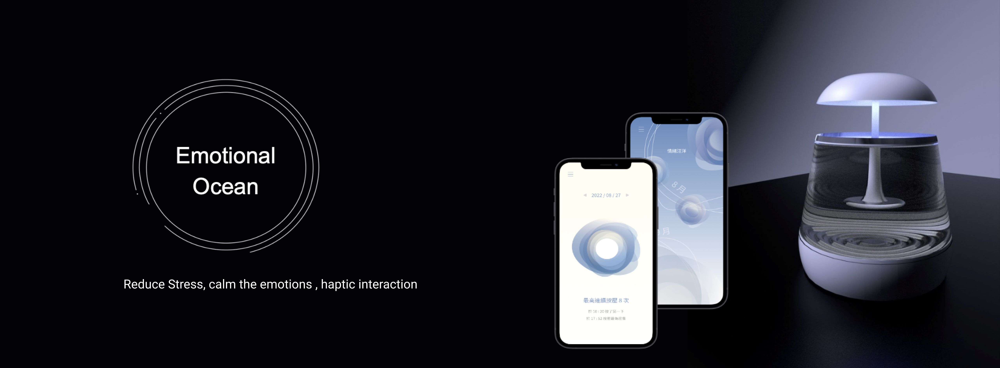

Emotional Ocean — Side Project
Emotional Ocean
An interactive tabletop device that turns daily emotions into water ripple visuals — raising awareness of emotional wellbeing

Summary
In today's fast-paced professional world, daily work stress can take a toll on mental well-being. This project combines research and interviews to explore stress sources, coping strategies, and emotional impacts.
Our findings show that work-related stress can lead to prolonged emotional strain, affecting job performance. To address this, we developed an interactive tabletop device using calming water ripple visuals and focus-enhancing pressure interactions. Users can digitally track their emotions — promoting emotional well-being and stability.
The project was presented at the TAICHI and CSCW academic conferences, and received the Best Design Award at OpenHCI 2022.